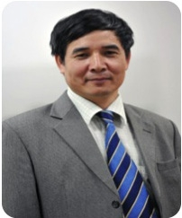

| Home | News | Register | Contact Us |

'Rector's MessageDay update: 21/01/2014 MESSAGE FROM THE RECTOR
Vietnam officially joined the WTO in 2006, which urges the country to have highly qualified human resources for a developing knowledge society, especially in highly value-added fields. |
|
© Copyright by FPT Education, all right reserved by 2018 ™. |